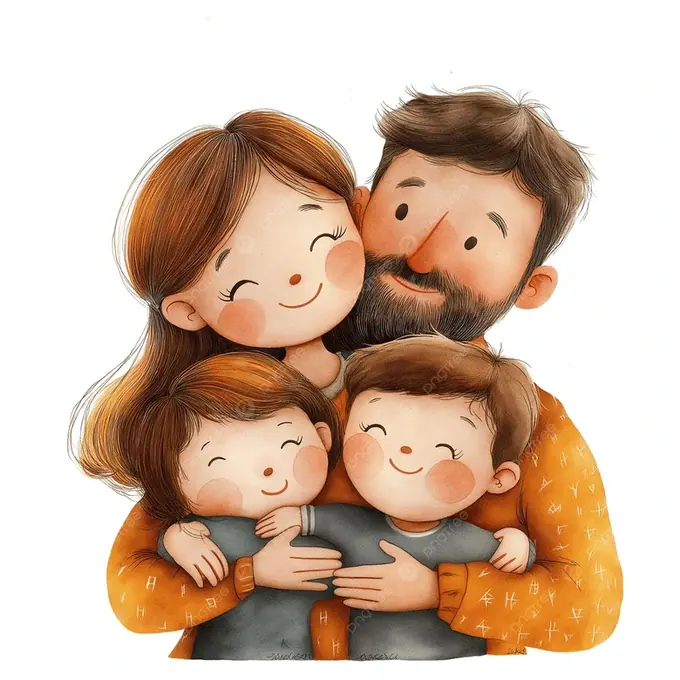
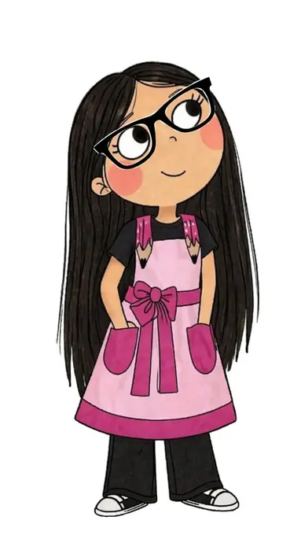
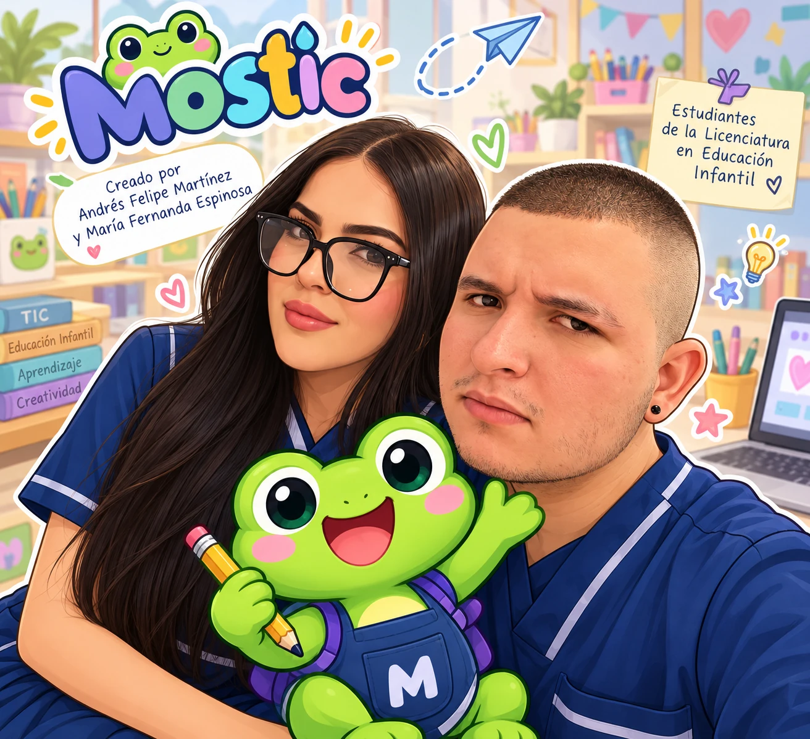

🏡 PARA EL HOGAR
Orientaciones para familias
Acompaña el aprendizaje de tus hijos con ideas sencillas para usar las TIC, crear materiales en casa y compartir experiencias juntos.
En Mostic acompañamos a docentes y familias con recomendaciones para utilizar la tecnología en el aula y el hogar, combinando experiencias digitales, juego y materiales sencillos.
Selecciona un botón para descubrir ideas, herramientas y nuevas experiencias educativas.
Explora orientaciones, actividades, recursos y nuevos espacios creados para aprender con Mostic.
Elige tu espacio y descubre consejos acompañados de imágenes, ejemplos y fuentes para consultar.

Acompaña el aprendizaje de tus hijos con ideas sencillas para usar las TIC, crear materiales en casa y compartir experiencias juntos.

Encuentra recomendaciones y ejemplos prácticos para integrar las TIC de forma creativa y organizada en tus clases.
Explora las actividades con sus orientaciones para el aula y el hogar, y consulta los recursos de apoyo en su propio apartado. Encontrarás un selector para elegir entre las seis experiencias.
Ya están disponibles «Mostic y la lista secreta del supermercado» y «El circo de la letra T». Encontrarás su explicación en Actividades y sus enlaces, imágenes y materiales para utilizar en Recursos. Las cuatro actividades restantes se añadirán poco a poco.
Una idea que nació de nuestro amor por la educación infantil.

Somos Andrés Felipe Martínez y María Fernanda Espinosa, estudiantes de la Licenciatura en Educación Infantil y creadores de Mostic. Esta página nace de nuestras experiencias durante la formación como docentes y de las ganas de compartir nuevas ideas para trabajar con los niños.
A lo largo de nuestras prácticas hemos descubierto diferentes maneras de aprovechar la tecnología en las actividades educativas y cómo esta se puede relacionar con materiales físicos que encontramos fácilmente en el aula y en el hogar. Por eso, decidimos crear Mostic, un espacio pensado para docentes y familias, donde reunimos juegos, actividades, materiales didácticos y orientaciones que puedan servir de apoyo al momento de enseñar y acompañar a los niños en sus aprendizajes.
Esperamos que aquí encuentren ideas que puedan adaptar a sus necesidades, explorar con los niños y llevar a la práctica, tanto en la escuela como en casa.